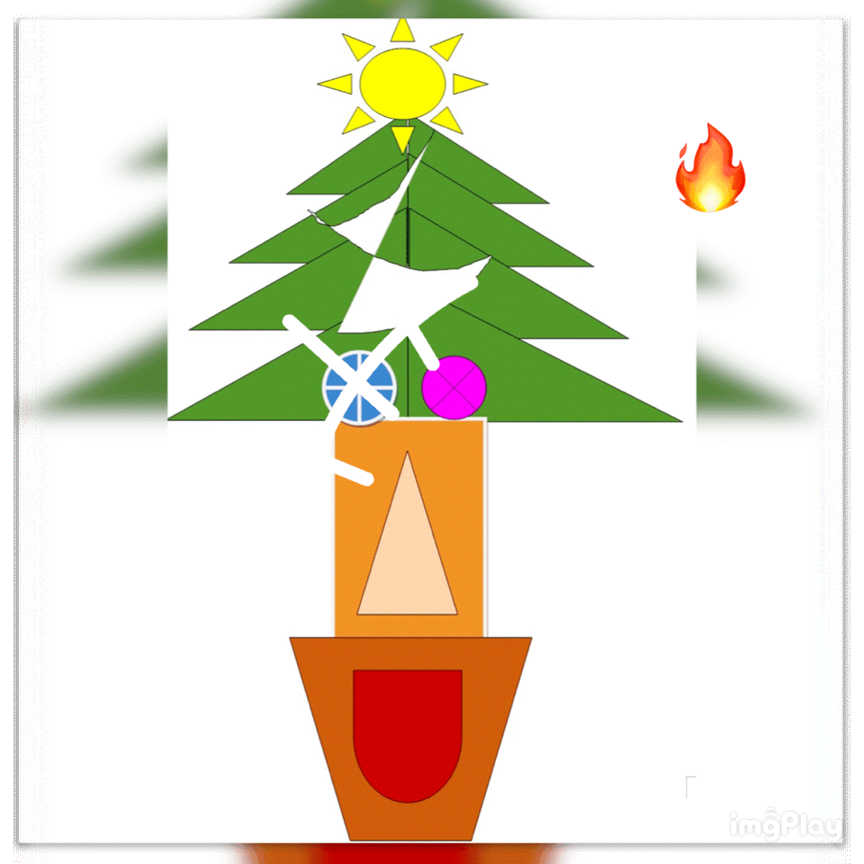

課題1： ボールを動かす
サッカーボールを回転させています。
転がるサッカーボールのanimation GIFです。
サッカーボールは無重力にあるので無限に回転しています。
サッカーワールドカップカタール大会、日本が強豪 スペインに2対1で逆転勝ちして、２大会連続の決勝トーナメント進出を決めました。
最後まであきらめずにボールを追う日本の選手たちの姿勢が強豪を打ち破る劇的な勝ち越しゴールを生み出しました。
私も来世ではこの永遠に回り続けるボールを追って、世界一のサッカー選手になりたいと決意しました。
背景画像はサッカーボールの黒白に合わせて選びました。
「football rolling」
課題2： オリジナルアニメ
自分のオリジナルanimation GIFです。
「クリストマッスル」 が暴れているアニメーションです。
クリストマッスルの縁はぼやかしました。また、クリストマッスルを小さくしながら、回転の動作も加えました。さらに、クリストマッスルが暴れているのは、炎がついてしまったからです。
そしてクリストマッスルは無限に回り続けます。
みなさん、クリストマッスルが回り続けるのを見ながらクリスマスを過ごしましょう！！
良いクリスマスをお過ごしください！

「クリストマッスルの暴走♪」